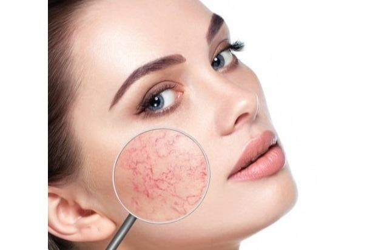
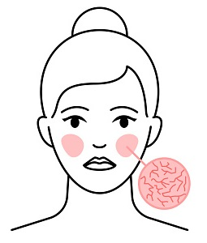
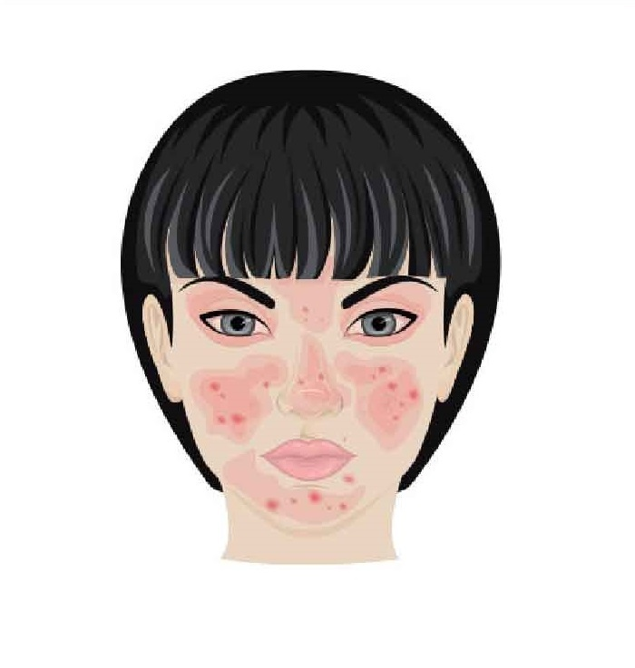
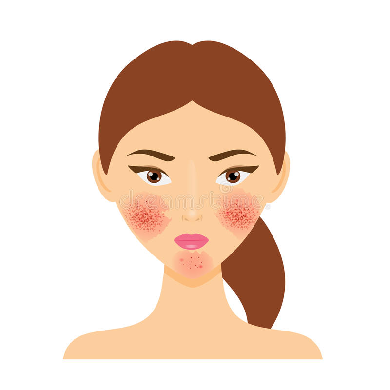
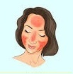
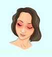

¿Qué es la rosácea?
No estoy roja por verguenza. Es solo un efecto de la rosácea
La rosácea es una afección común de la piel que causa enrojecimiento y vasos sanguíneos visibles en la cara. También puede producir pequeñas protuberancias rojas llenas de pus. Estos signos y síntomas pueden aparecer durante semanas o meses y luego desaparecer por un tiempo. La rosácea puede confundirse con el acné, otros problemas de la piel o la rubicundez natural.
La rosácea puede afectar a cualquier persona. Pero es más común en mujeres de mediana edad que tienen la piel clara. No existe cura para la rosácea, pero el tratamiento puede controlar y reducir los signos y síntomas.




Síntomas
Tipos de rosácea

Tipo 1
Tipo 2
Tipo 3
